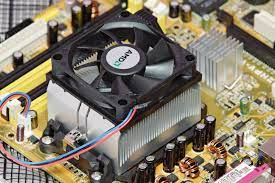

Heatsink
A heatsink is a critical component in a computer system that helps dissipate heat generated by the processor and other high-performance components. Effective heat management is crucial for maintaining the stability, performance, and longevity of electronic devices.
What is a Heatsink?
A heatsink is a passive heat exchanger device that transfers heat away from a component and dissipates it into the surrounding air. It is typically made of a metal with high thermal conductivity, such as aluminum or copper, and features a large surface area with fins or protrusions to maximize heat dissipation.

Key Components of a Heatsink
A typical heatsink consists of several essential components, including:
- Heatsink Base: The heatsink base is a flat surface that makes direct contact with the component (e.g., CPU or GPU) to facilitate heat transfer. It is designed to have a high thermal conductivity and a smooth, even surface for optimal contact.
- Heatsink Fins: The heatsink fins are thin, parallel protrusions that extend from the base. They increase the surface area of the heatsink, allowing for more efficient heat dissipation into the surrounding air.
- Heat Pipes (optional): Some heatsinks incorporate heat pipes, which are hollow tubes filled with a liquid that helps transfer heat from the base to the fins more efficiently.
- Thermal Interface Material (TIM): A thin layer of thermal interface material (e.g., thermal paste or thermal pad) is applied between the component and the heatsink base to improve heat transfer by filling microscopic gaps and air pockets.
Types of Heatsinks
Heatsinks come in various types and designs, including:
- Air Coolers: Air coolers are the most common type of heatsink. They rely on airflow from a fan to dissipate heat from the fins into the surrounding air.
- Liquid Coolers: Liquid coolers use a closed-loop system with a liquid coolant to transfer heat from the component to a radiator, where it is dissipated into the air by fans.
- Passive Heatsinks: Passive heatsinks do not use any fans and rely solely on natural convection and radiation to dissipate heat. They are often used in low-power or silent computing environments.
Importance of Heatsinks
Heatsinks play a crucial role in maintaining the thermal stability and performance of computer components, particularly the processor and graphics card. As these components generate significant amounts of heat during operation, effective heat dissipation is essential to prevent overheating, throttling, and potential damage.
Choosing the right heatsink is crucial when building or upgrading a computer system. It should have sufficient cooling capacity to handle the heat output of the component, a compatible mounting mechanism, and efficient heat transfer characteristics. Properly installing and maintaining the heatsink, including applying thermal paste and ensuring adequate airflow, is also essential for optimal cooling performance.